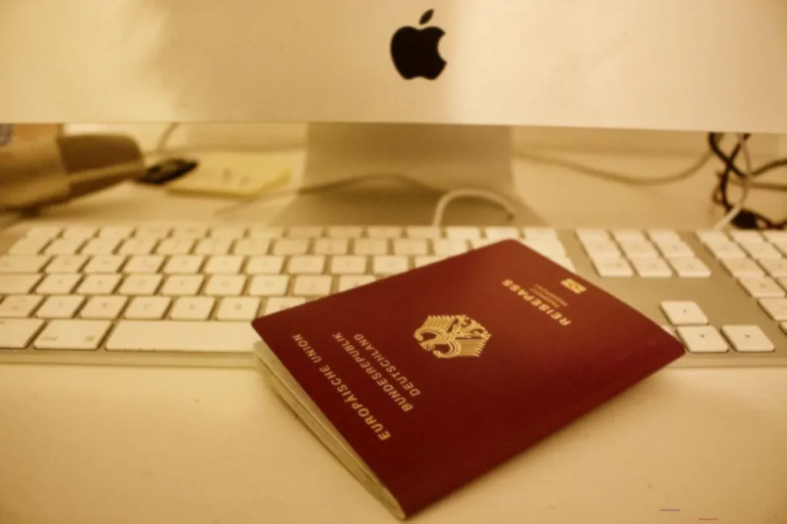

If you are working or studying in Germany, then you are likely aiming towards permanent residency, maybe even citizenship down the line. However, you can only become a German permanent resident and get a Settlement Permit if you fulfill a set of requirements.
The German permanent residence permit known also as Settlement Permit and is issued only after you have lived and worked in Germany for a specified period of time – usually four years, but certain visa types allow you to apply for permanent residence quicker.
 The period of time you have to live in Germany before you get a Settlement Permit depends on your current residential status. As such, you can become a German permanent resident: